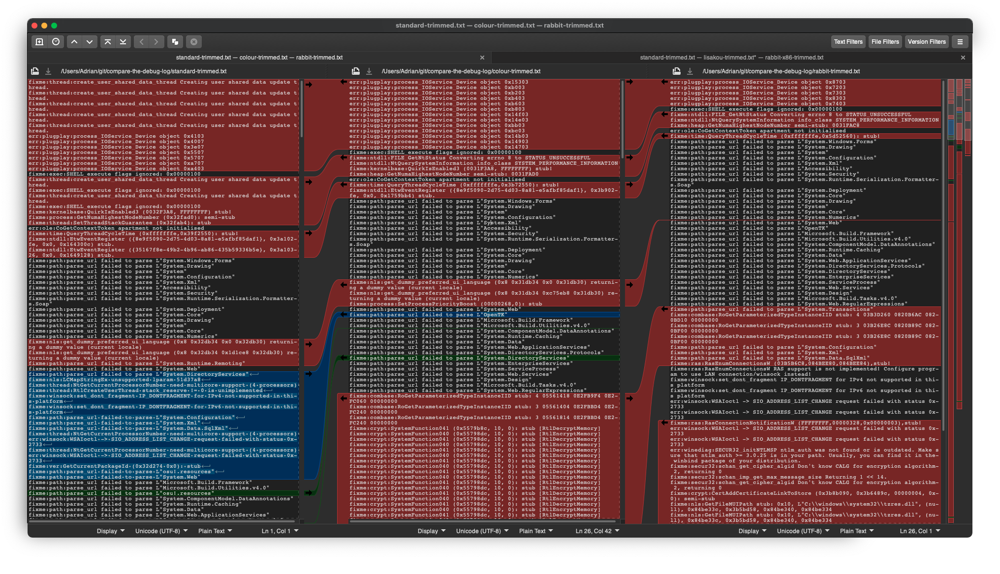

SilentCrash¶
SilentCrash is a user-reported issue with the osu! Wineskins that occured around July - September 2021, affecting both the Apple Silicon and x86 Wineskins on predominantly Apple Silicon devices on Big Sur, but also a small subset of x86 devices.
Users would properly install the osu! wrapper
The game may update or even begin to load, but will immediately close without warning upon startup
WINE logs do not provide any obvious error messages
osu!macOS Agent reports are usually clean
Logs appear to be extremely similar to a normal executable run and closure
Preliminary analysis¶
The first obvious step was to compare Wineskin Test Run logs in the hope they’d be useful to give away any obvious error. Using the Meld diff viewer showed that there were no useful differences between a standard run executed on my system, and user-received reports.
In past times we had another bug with .NET that was easily identifiable within Test Run logs, and indicative of a race condition related to low-level runtime issues (i.e garbage collection, binary translation) but could be fixed usually through updating the dotnet Winetrick. The SilentCrash issue represents the first emergence of a similarly symptomatic error, but it is likely different, if not unrelated.
Running on Apple Silicon¶
I was unable to reproduce the user reports on my Intel 80386 based Mac, so I borrowed a family member’s 2020 MacBook Air with M1. I could not reproduce the error and osu! ran successfully.
Regression testing¶
Considering this issue popped up with the first confirmed user report on 11 July 2021, it could have possibly been a regression within the osu! executable. The Wineskin was last updated on 15 February 2021, and the issue is persistent across both Apple Silicon and i386 Wineskins. Looking through the osu! changelogs from around this time, there is a particularly interesting changelog update dated 19 May 2021.
We don’t have access to the source for stable, and we don’t know how this logic was implemented. Searching the osu!dev Discord server brought about limited results too.
In any case however, the osu! executable is an entirely valid PE32 executable. If a change in the program’s logic is in fact causing a crash, the fix is incumbent on us and not on osu!. Regardless of whether or not a regression was included in the osu! execuable, this calls for further analysis through debugging.
However, WineHQ AppDB [bug 50111](https://bugs.winehq.org/show_bug.cgi?id=50111) does in fact show a regression introduced with the osu! executable as I had initially suspected. However, this regression was dated with osu-stable 20201110 and produced a Wine Mono error. Furthermore, notably osu! produces a crash error, which does not exist on our own user reports. Only user report #2 mimics this behaviour.
0204:fixme:wmiutils:status_code_GetErrorCodeText 103EB910, 0x80041002, 0x0000, 0x00000001, 0C74F374
User reports have mostly died down for now. Updating dotnet, which is the recommended resolution in 50111 (and the previously offered resolution), should continue to be recommended to users.
Debugging with lldb¶
In future, we should consider debugging to analyse the source issues (e.g regressions introduced into the executable such as this one). The main challenges are packaging this process in a user-friendly format, and being able to interpret the debugging on a Mono application for which we do not have source.
Although I was originally going to use winedbg and gdb, both are incompatible for different reasons.
winedbg does not run with wine32on64
gdb requires a painful code-signing procedure to run on modern macOS
Technocoder suggested to me that I use lldb to debug osu! - so using LLDB I want to generate a healthy startup stack trace.
Most user reports detail a successful update sequence and osu! logo followed by an immediate crash on startup.
gdbidoof¶
To overcome this, I am working on a small general-purpose debugging utility called gdbidoof. This would be used by end users to run a stack trace just before a crash, using the obscurely documented --batch mode brought to life by this Stack Overflow comment by John.
gdbidoof performs an end user-friendly version of the comment above with added features. Given that multiple processes are used by WINE, we’ll instead ask the user to use a (0d) PID on Wineserver and all preloader processers. Failing or otherwise, we’ll run backtraces on all threads (or the most recent core dump). This will help us narrow down what sort of instructions are being executed at a time of a crash (particularly a silent crash with no obvious errors).
This program is currently under development.
Note
Requires lldb-340.4.119 (Xcode 7.2) or greater
-b
--batch
Tells the debugger to running the commands from -s, -S, -o & -O,
and then quit. However if any run command stopped due to a signal
or crash, the debugger will return to the interactive prompt at the
place of the crash.
-o
--one-line
Tells the debugger to execute this one-line lldb command after any
file provided on the command line has been loaded.
-k
--one-line-on-crash
When in batch mode, tells the debugger to execute this one-line
lldb command if the target crashes.
List of user reports¶
Other user issues¶
User report B (possibly related; no test run to confirm)
Acknowledgements¶
Thanks to Technocoder for useful information about debugging with LLDB
Thanks to Gcenx for useful information about winedbg
Thanks to aidas956 for their bug report on WineHQ Bugzilla